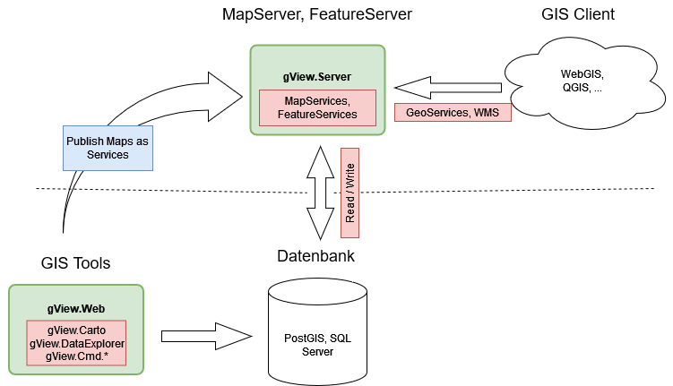

Note
This documentation was based on the gView documentation in German Language. The translation was (semi) automated. Feel free to contribute! More inforation in the document footer.
Welcome to gView GIS¶
gView GIS is a user-friendly Open Source GI framework for creating map and feature services.
The tools for creating maps are offered through a web interface, which can be run locally on the client or hosted on a server. The maps are created using the gView Carto program, which is available within the gView.WebApps application. The maps consist of layers based on various geo-data sources. Individual layers can be colored and/or labeled as desired.
Completed maps can be published via the gView Server. The created map and feature services can be accessed via defined interfaces (WMS, WMTS, GeoServices REST…).
Positioning of gView GIS¶
gView GIS is not to be understood as an independent GIS platform. It merely provides a user-friendly authoring tool (gView Carto) for creating maps with attractive cartographic representation and a performant map server for publishing these maps. These maps are thus available through various interfaces and can be integrated into an existing WebGIS, for example.
gView GIS is not to be understood as desktop software that can visualize geo-data for analysis purposes. For these tasks, there are already powerful open-source projects like https://www.qgis.org.
Rather, the aim is to publish performant and cartographically appealing map services via the gView.Server. Analysis tools are offered in other/existing programs that can integrate gView map services.
A recommended productive setup for using gView GIS would be, for example:
The two components Database and Map-/Feature Server can be located on
a server, and the GIS Client can run locally on the desktop or in a browser.
gView Carto is also installed locally on a desktop. The created maps
are published in the gView MapServer. The gView MapServer also has a
Security Layer, which determines which client can view,
query, or edit the data.
Another use case for gView GIS is the creation of offline GIS solutions. These can be installed on any (Windows, Linux, MacOS) device and can serve as backup/emergency or offline systems (laptop). For this, gView GIS offers the possibility via command-line tools to transfer all vector data of a map into a SQLite database. This eliminates the database layer, and the SQLite database can be easily copied to the target device. Only the gView MapServer and the corresponding client software need to be installed on the target device. The gView MapServer can be run on the target device as a Standalone application, as described in the installation instructions.
Components of gView GIS¶
The components of the gView Framework can be divided into three categories:
gView WebApps: This includes the web applications gView Carto and gView DataExplorer. Both can be operated via a web interface. Using these programs, maps can be created or geo-data can be managed. The basis for both programs is .NET 8 (Microsoft.AspNetCore.App 8.0.x Runtime) and thus runnable on Windows, Linux, and MacOS operating systems.
gView Server: The gView Server is a map and feature server, which can publish the created maps as map services. In addition to OGC standards (WMS, WFS), the services are also available in formats such as GeoServices REST and ArcXML. This allows the services to be displayed and queried in any common GIS software. The basis of the program is .NET 8 (Microsoft.AspNetCore.App 8.0.x Runtime) and thus runnable on Windows, Linux, and MacOS operating systems.
gView Commandline Tools: A collection of command-line tools that automate recurring tasks in the gView GIS environment (e.g., publishing a map for the server). The tools are located in the same directory as gView.WebApps after installation and have the same runtime requirements.